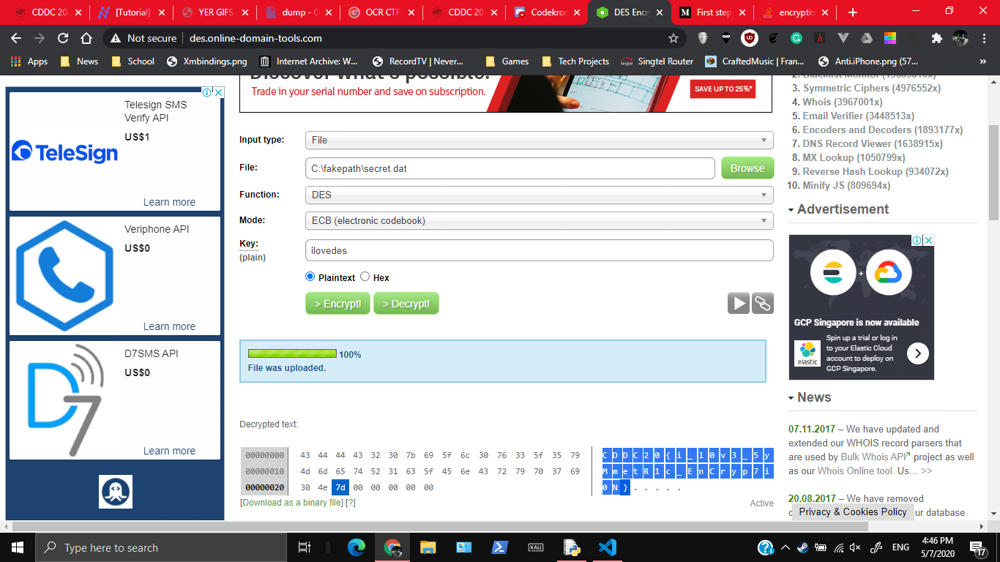

Original Github Link
ilovedes
817, GATE 4, 24 SOLVES
Description
I heard that the CFO of Unduplicitous Corp loves using DES to encrypt his data, LOL.
MD5("secret.dat"): da0e4d339b8265938587848a52758819
Attached Files
Solution
Just decrypt the .dat file with the password ilovedes (since the password needs to be 8 bytes/characters)

Flag
CDDC20{i_l0v3_5yMmetR1c_EnCryp7i0N}